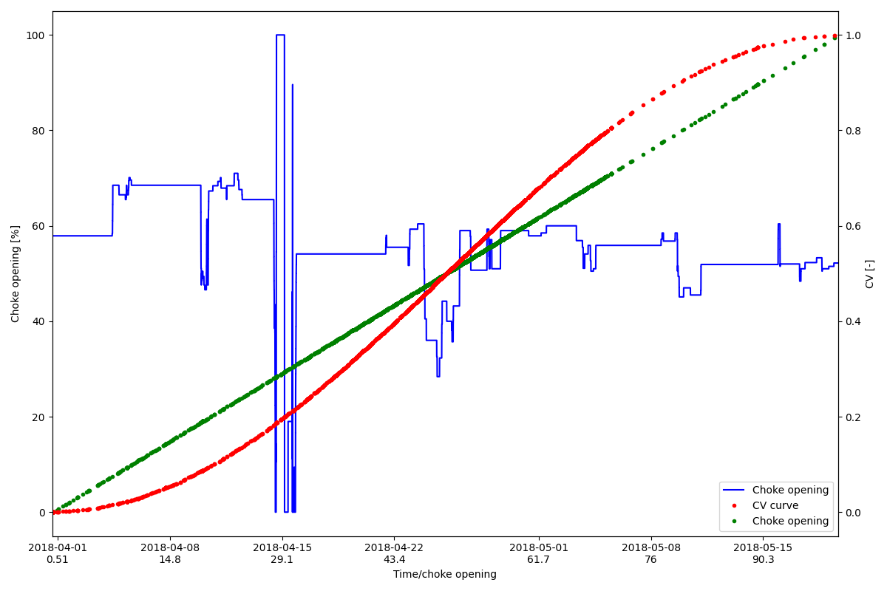

Note
Go to the end to download the full example code.
Re-indexing to mock a scatter plot
This shows how we can superimpose a scatter plot on an existing chart
import os
import matplotlib.pyplot as plt
import numpy as np
import pandas as pd
from datetime import datetime
from indsl.resample.mock_scatter_plot import reindex_scatter, reindex_scatter_x
# Load the pressure sensor data
base_path = "" if __name__ == "__main__" else os.path.dirname(__file__)
# Read in data for a production choke opening
filename = os.path.join(base_path, "../../datasets/data/pd_series_HCV.pkl")
HCV_series = pd.read_pickle(filename)
# Creating a mock CV curve using a sine form
n = 20
x_values = np.linspace(0, 100, n)
y_values = (np.sin(x_values / x_values.max() * np.pi - np.pi * 0.5) + 1) * 0.5
from scipy.interpolate import interp1d
# Calculate the CV value for the different choke openings, using the interpolated CV curve
interpolator = interp1d(x_values, y_values)
CV_array = interpolator(HCV_series.values)
# Create the series for the CV value
CV_series = pd.Series(CV_array, index=HCV_series.index)
# We normalise choke opening such that [0,100] covers the entrie time range
scatter_y = reindex_scatter(HCV_series, CV_series, align_timesteps=True)
scatter_x = reindex_scatter_x(HCV_series)
fig = plt.figure(figsize=(12, 8))
lns1 = plt.plot(HCV_series.index, HCV_series.values, "-b", label="Choke opening")
axl = plt.gca()
axr = axl.twinx()
lns2 = axr.plot(scatter_y.index, scatter_y.values, ".r", label="CV curve")
lns3 = axl.plot(scatter_x.index, scatter_x, ".g", label="Choke opening")
axl.set_xlabel("Time/choke opening")
axl.set_ylabel("Choke opening [%]")
axr.set_ylabel("CV [-]")
# Adding both time and choke opening for the x-axis.
xticks_pos = axl.get_xticks() # Get the position of the existing ticks
xtick_labels = axl.get_xticklabels() # Get the date for the existing ticks
xticks_pos_epoc = [
datetime.strptime(val.get_text(), "%Y-%m-%d").timestamp() for val in xtick_labels
] # Convert the dates to timestamp
# Need to convert the timestamp to the corresponding choke opening
epoc_start = HCV_series.index[0].timestamp()
epoc_end = HCV_series.index[-1].timestamp()
d_epoc = epoc_end - epoc_start
# The scale of HCV_series is [x_min_value,x_max_value]. We will now map it to the epoc and then convert it to datetime
x_min_value = 0
x_max_value = 100
xtic_labels_hcv = [
(val - epoc_start) / d_epoc * (x_max_value - x_min_value) for val in xticks_pos_epoc
] # gives us the HCV value for the corresponding points
# Create the tick label consisting of the date, and the choke opening value on a new line
xtick_labels_mod = [
val1.get_text() + "\n" + "%1.3g" % (min([max([val2, x_min_value]), x_max_value]))
for (val1, val2) in zip(xtick_labels, xtic_labels_hcv)
]
# Finally update the x-tics values
plt.xticks(xticks_pos, xtick_labels_mod)
# added the lines to the legend
lns = lns1 + lns2 + lns3
labs = [l.get_label() for l in lns]
plt.legend(lns, labs, loc=4)
plt.xlim([HCV_series.index[0], HCV_series.index[-1]])
plt.tight_layout()
plt.show()
Total running time of the script: (0 minutes 0.701 seconds)